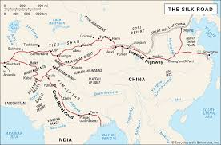

The Earliest Forms of Globalisation
The direct origins of globalisation span to the dawn of human history; globalisation is becoming
more interconnected and it has been happening forever.
However globalisation has become significantly
more prominent in the last millenia than ever before.

The silk and spice roads were some of the most
important early forms of globalisation as they allowed the European and Asian continents to make initial
contact and later learn different techniques from one another. These early forms of globalisation
allowed unification between the two continents which for the most part benefited humanity. The Columbian
exchange is yet another important event in the history of globalisation as it introduced the European
people to the Indigenous population of the Americas; despite the two cultures making contact it had an
undoubtedly negative impact on the native population and their overall quality of life. For example some
diseases such as smallpox brought over by the Europeans absolutely devastated the indigenous population
with an estimated ninety-five percent of the population being wiped out. Globalism had another major
increase throughout the late 19th and early 20th centuries with events such as the industrial revolution
creating trade and manufacturing agreements between countries leading to a more interdependent world.
 During the first World War the United States of America did not engage in direct combat until the
later
stages of the war and instead began supplying European countries with resources such as ammunition to
use in battle causing interdependence between Europe and the US. After the war the US helped Europe
rebuild under the condition that all materials used were purchased from US companies. This led to an
economic boom in the US granting them wealth unseen in history until the 1920’s when the great
depression hit. The great depression ruined the global economy due to the world being dependent on the
US and their products. From the second world war onward globalism has been used as a method to avoid
another world war and remove the gap between wealthy and poor nations by supporting countries with less
wealth.
During the first World War the United States of America did not engage in direct combat until the
later
stages of the war and instead began supplying European countries with resources such as ammunition to
use in battle causing interdependence between Europe and the US. After the war the US helped Europe
rebuild under the condition that all materials used were purchased from US companies. This led to an
economic boom in the US granting them wealth unseen in history until the 1920’s when the great
depression hit. The great depression ruined the global economy due to the world being dependent on the
US and their products. From the second world war onward globalism has been used as a method to avoid
another world war and remove the gap between wealthy and poor nations by supporting countries with less
wealth.